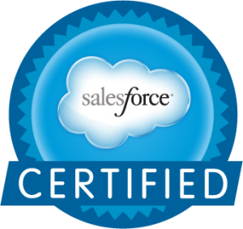

Hi, I'm Marufa Sultana Sumi
Data Analyst & Clinical Data Science Enthusiast
About Me
I am a data analyst and clinical data science enthusiast with a strong background in pharmaceutical sciences, healthcare analytics, and machine learning. My experience ranges from laboratory-based research and GMP-compliant quality control to data analysis, predictive modeling, and real-world evidence (RWE) workflows. I enjoy working at the intersection of pharmaceutical science and data analytics, transforming complex healthcare and operational datasets into meaningful insights. Currently, I am pursuing my MS in Analytics at Georgia Tech, where I am strengthening my skills in statistical modeling, machine learning, data visualization, and clinical data analysis. My goal is to contribute to data-driven healthcare innovation by combining my scientific foundation with modern analytical and machine learning tools.
Professional Experiences
-
📌Associate Technical Consultant August,2023 - Dec,2024Perficient Inc,Livonia,MI
- Analyzed large operational datasets to identify process gaps, data-quality issues, and workflow inefficiencies.
- Built and maintained dashboards and reports to deliver clear insights to business and technical stakeholders.
- Automated data cleaning, validation, and transformation processes to reduce manual workload and improve accuracy.
- Performed root-cause analysis on data discrepancies using logs, exploratory analysis, and structured debugging.
- Partnered with cross-functional teams to gather requirements and translate business questions into measurable metrics.
- Documented data models, reporting structures, and workflows to support analytics and decision-making.
- Supported testing, validation, and deployment of enhancements across multiple environments to ensure reliable data delivery.
< -
🔬Senior Officer, Quality Control Feb 2016 – Aug 2016Renata Limited · Mirpur, Dhaka, Bangladesh
- Performed chemical and physical analysis of raw materials, in-process samples, and finished pharmaceutical products.
- Operated analytical instruments including HPLC, GC, UV–Vis, FT-IR, TLC, KF Titrator, Auto-Titrator, and dissolution/disintegration testers.
- Conducted method verification, impurity profiling, assay development, and stability studies to ensure product accuracy and safety.
- Completed GMP-compliant documentation, source validation of raw materials, and quality review for regulatory readiness.
-
🔬Officer, Quality Control Jan 2014 – Jan 2016Incepta Pharmaceuticals Limited · Savar, Dhaka, Bangladesh
- Performed QC analysis of raw materials, intermediates, and finished products in accordance with pharmacopeial standards (USP/BP).
- Operated HPLC, GC, UV–Vis, IR, KF Titrator, and dissolution/disintegration testing equipment for routine quality assessments.
- Maintained CRS/working standards, calibration logs, and laboratory documentation to support GMP compliance.
- Supported batch release testing, impurity analysis, and method validation activities across multiple production lines.
-
🏭In-Plant Trainee Jan 2013 – Feb 2013Eskayef Bangladesh Limited · Dhaka, Bangladesh
- Completed structured rotations across Manufacturing, QA, Product Development, Warehouse, Engineering, and Sales & Marketing units.
- Gained hands-on exposure to solid, liquid, and topical formulation processes in GMP-regulated environments.
- Observed quality control workflows, batch documentation practices, and compliance procedures.
- Developed foundational understanding of pharmaceutical production operations and end-to-end product lifecycle.
Skills and Methodologies
Technical Skills
Data Visualization
Tools & Platforms
Healthcare & Pharmaceutical Analytics
Software Methodologies
Soft Skills
Education & Training
Master of Science in Analytics
- Georgia Institute of Technology
- Aug 2024 – Present
- Focus: Machine Learning, Statistical Modeling, Time-Series Forecasting, Healthcare Analytics
Master of Pharmacy (M.Pharm)
- State University of Bangladesh
- CGPA: 3.98 / 4.0
- Graduated: 2014
Bachelor of Pharmacy (B.Pharm)
- State University of Bangladesh
- CGPA: 3.92 / 4.0
- Graduated: 2013
Software Engineering Apprenticeship
- Devmountain Bootcamp (BrightPath Program)
- Apr 2023 – Jul 2023
- Full-stack fundamentals, Java, Spring Boot, JavaScript, SQL, Testing
Salesforce Developer Trainee
- Soft Innovas, New Jersey
- Mar 2022 – Nov 2022
- Training in Salesforce Administration, Apex, Flows, LWC fundamentals
Certifications
Salesforce Certifications

Salesforce Certified AdministratorOther Certifications
Projects
Selected projects across full-stack development, machine learning, and deep learning.
Project 1: Diabetes Management App
Developed a Gestational Diabetes management App for the foundation capstone using HTML, CSS, JavaScript , Axios, node.js, Express.js and PostgreSQL
Project 2: Pharmacy Management App
Developed a Pharmacy Management App during the specialization using HTML, CSS, JavaScript, Bootstrap and Thyme leaf for frontend and Spring Boot, Hibernate data JPA as ORM, PostgreSQL for Backend.